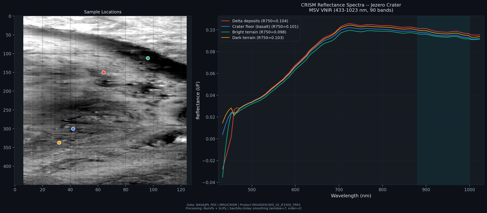
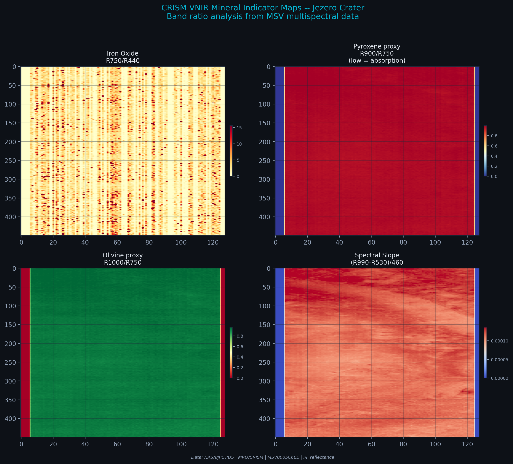

Análisis CRISM Marte — Cráter Jezero
Mapeo mineralógico para detección de carbonatos y arcillas
CRISM Mars Analysis — Jezero Crater
Mineral Mapping for Carbonate and Clay Detection
Análisis hiperespectral del cráter Jezero (~18.4°N, 77.7°E) utilizando datos CRISM (Compact Reconnaissance Imaging Spectrometer for Mars) a bordo del MRO. Se procesan productos TRDR con 545 canales (VNIR 362–1053 nm + IR 1002–3920 nm) para mapear la distribución de Mg-carbonato en los depósitos del delta, arcillas Fe/Mg esmectíticas, olivino y piroxeno. Se aplican 7 productos sumarios estándar (Viviano-Beck et al., 2014) y se proponen índices propios CMPI (Cussen Mars Prospection Indices) para evaluación de historia acuosa y potencial astrobiológico. Hyperspectral analysis of Jezero Crater (~18.4°N, 77.7°E) using CRISM (Compact Reconnaissance Imaging Spectrometer for Mars) data aboard MRO. TRDR products with 545 channels (VNIR 362–1053 nm + IR 1002–3920 nm) are processed to map the distribution of Mg-carbonate in delta deposits, Fe/Mg smectite clays, olivine, and pyroxene. Seven standard summary products (Viviano-Beck et al., 2014) are applied, and custom CMPI (Cussen Mars Prospection Indices) are proposed for aqueous history assessment and astrobiological potential evaluation.
CRISM Mafic Composite — Distribución de olivino + LCP + HCP CRISM Mafic Composite — Olivine + LCP + HCP Distribution
Composición RGB de los índices máficos OLINDEX3 (R), LCPINDEX2 (G) y HCPINDEX2 (B) para identificar la distribución de minerales de origen ígneo en el suelo del cráter Jezero y los alrededores de Nili Fossae. RGB composite of mafic indices OLINDEX3 (R), LCPINDEX2 (G), and HCPINDEX2 (B) to identify the distribution of igneous-origin minerals across the Jezero Crater floor and surrounding Nili Fossae region.

El olivino (rojo) domina el suelo del cráter, consistente con la unidad ígnea de olivino-carbonato descrita por Ehlmann et al. (2008). Las zonas de piroxeno (verde/azul) marcan el basamento noachiano expuesto en los bordes del cráter. La mezcla olivino-LCP en el margen occidental indica posible alteración parcial del manto original. Olivine (red) dominates the crater floor, consistent with the olivine-carbonate igneous unit described by Ehlmann et al. (2008). Pyroxene zones (green/blue) mark Noachian basement exposed at crater rims. The olivine-LCP mixture on the western margin suggests possible partial alteration of the original mantle.
Filosilicatos y minerales hidratados en el delta Phyllosilicates and Hydrated Minerals in the Delta
Composición RGB usando BD1900r2 (R), D2300 (G) y BD2300 (B) para mapear la presencia de minerales hidratados, arcillas Fe/Mg esmectíticas y fases de alteración acuosa concentradas en los depósitos deltáicos del cráter Jezero. RGB composite using BD1900r2 (R), D2300 (G), and BD2300 (B) to map the presence of hydrated minerals, Fe/Mg smectite clays, and aqueous alteration phases concentrated in the deltaic deposits of Jezero Crater.

La señal de filosilicatos (verde/cian) se concentra a lo largo del frente del delta occidental, donde los sedimentos fluviales preservan arcillas esmectíticas transportadas desde la cuenca de captación. BD1900r2 (rojo) indica agua molecular ligada, extendida por todo el depósito deltáico. Los afloramientos ricos en filosilicatos a lo largo de Nili Fossae aparecen en tonos cian brillante. The phyllosilicate signal (green/cyan) concentrates along the western delta front, where fluvial sediments preserve smectite clays transported from the catchment basin. BD1900r2 (red) indicates bound molecular water, spread across the entire deltaic deposit. Phyllosilicate-rich outcrops along Nili Fossae appear in bright cyan tones.
| Producto SumarioSummary Product | Mineral objetivoTarget Mineral | Banda claveKey Band | Señal en JezeroSignal in Jezero |
|---|---|---|---|
| OLINDEX3 | OlivinoOlivine | ~1050 nm | Fuerte (suelo)Strong (floor) |
| LCPINDEX2 | Piroxeno bajo CaLow-Ca pyroxene | ~1800 nm | Moderada (bordes)Moderate (rims) |
| HCPINDEX2 | Piroxeno alto CaHigh-Ca pyroxene | ~2100 nm | Baja (basamento)Low (basement) |
| BD1900r2 | H₂O / OH | ~1900 nm | Fuerte (delta)Strong (delta) |
| BD2300 | Mg-OH | ~2300 nm | Fuerte (arcillas)Strong (clays) |
| D2300 | Esmectita Fe/MgFe/Mg smectite | ~2300 nm | Fuerte (delta + Nili)Strong (delta + Nili) |
| MIN2295_2480 | Carbonato vs. filosilicatoCarbonate vs. phyllosilicate | 2295–2480 nm | VariableVariable |
CMPI Prospection Composite — Mapeo de historia acuosa CMPI Prospection Composite — Aqueous History Mapping
Composición RGB de los tres índices CMPI propuestos: CMPI-01 HMI (R), CMPI-02 CBI (G) y CMPI-03 AHI (B) para integrar la información de hidratación, carbonatos y filosilicatos en un único compuesto de prospección astrobiológica. RGB composite of the three proposed CMPI indices: CMPI-01 HMI (R), CMPI-02 CBI (G), and CMPI-03 AHI (B) to integrate hydration, carbonate, and phyllosilicate information into a single astrobiological prospection composite.

El índice integrado CMPI-03 AHI resalta en magenta/blanco las zonas con máxima convergencia de señales de hidratación, carbonatos y filosilicatos, correspondientes al frente del delta y los afloramientos de carbonato de Mg descritos por Goudge et al. (2015). Estas son las zonas de mayor interés astrobiológico para preservación de biofirmas. The integrated CMPI-03 AHI index highlights in magenta/white the zones with maximum convergence of hydration, carbonate, and phyllosilicate signals, corresponding to the delta front and the Mg-carbonate outcrops described by Goudge et al. (2015). These are the zones of highest astrobiological interest for biosignature preservation.
| ÍndiceIndex | NombreName | ComponentesComponents | ObjetivoTarget |
|---|---|---|---|
| CMPI-01 | HMI — Hydrated Mineral Index | BD1900r2 + BD2300 | Agua ligada + Mg-OHBound water + Mg-OH |
| CMPI-02 | CBI — Carbonate Bearing Index | MIN2295_2480 × weight | Mg-carbonato 2300–2500 nmMg-carbonate 2300–2500 nm |
| CMPI-03 | AHI — Aqueous History Index | (HMI + CBI + D2300) / 3 | Potencial astrobiológicoAstrobiological potential |
Resultados e implicaciones Results and Implications
2. Filosilicatos a lo largo de Nili Fossae: Afloramientos ricos en arcillas esmectíticas (D2300, BD2300) a lo largo de la fractura tectónica, indicando alteración acuática extensa del basamento noachiano.
3. Olivino en el suelo del cráter: OLINDEX3 confirma una unidad de olivino (Fo60–Fo80) extendida por todo el piso del cráter, parcialmente alterada a carbonato, un marcador de interacción agua-roca.
4. CMPI-03 AHI como herramienta de prospección: El índice integrado de historia acuosa resalta las zonas de máximo interés astrobiológico, coincidentes con los objetivos de muestreo de Mars 2020 Perseverance. 1. Mg-carbonate concentrated in delta deposits: Delta fan deposits show intense MIN2295_2480 and CMPI-02 CBI signals, confirming the presence of magnesium carbonate consistent with an alkaline-pH lacustrine environment. These carbonates have high biosignature preservation potential.
2. Phyllosilicate-rich outcrops along Nili Fossae: Smectite clay-rich outcrops (D2300, BD2300) along the tectonic fracture, indicating extensive aqueous alteration of the Noachian basement.
3. Olivine-bearing unit across crater floor: OLINDEX3 confirms an olivine unit (Fo60–Fo80) spanning the entire crater floor, partially altered to carbonate — a marker of water-rock interaction.
4. CMPI-03 AHI as prospection tool: The integrated aqueous history index highlights zones of maximum astrobiological interest, coincident with Mars 2020 Perseverance sampling targets.
Datos, procesamiento y stack técnico Data, Processing, and Tech Stack
| ParámetroParameter | DetalleDetail |
|---|---|
| InstrumentoInstrument | CRISM (Compact Reconnaissance Imaging Spectrometer for Mars) |
| PlataformaPlatform | Mars Reconnaissance Orbiter (MRO) — NASA/JPL |
| ProductoProduct | TRDR (Targeted Reduced Data Record) — I/F reflectance |
| Rango espectralSpectral range | VNIR: 362–1053 nm · IR: 1002–3920 nm · 545 canales |
| Resolución espacialSpatial resolution | ~18 m/px (FRT mode) |
| ObjetivoTarget | Cráter Jezero ~18.4°N, 77.7°EJezero Crater ~18.4°N, 77.7°E |
| Brecha del detectorDetector gap | Unión VNIR/IR 1000–1030 nm (interpolada)VNIR/IR junction 1000–1030 nm (interpolated) |
| Productos sumariosSummary products | OLINDEX3, LCPINDEX2, HCPINDEX2, BD1900r2, BD2300, D2300, MIN2295_2480 |
| Fuente de datosData source | NASA PDS Geosciences Node (pds-geosciences.wustl.edu) |
| FormatoFormat | PDS3 — IMG + LBL |
| LenguajeLanguage | Python 3.12 |
| LibreríasLibraries | spectral (SPy) · pvl · NumPy · SciPy · Matplotlib |
Bibliografía Bibliography
- Murchie, S.L. et al. (2007). Compact Reconnaissance Imaging Spectrometer for Mars (CRISM) on Mars Reconnaissance Orbiter (MRO). Journal of Geophysical Research, 112(E5), E05S03.
- Ehlmann, B.L. et al. (2008). Orbital identification of carbonate-bearing rocks on Mars. Science, 322(5909), 1828–1832.
- Viviano-Beck, C.E. et al. (2014). Revised CRISM spectral parameters and summary products based on the currently detected mineral diversity on Mars. Journal of Geophysical Research: Planets, 119(6), 1403–1431.
- Goudge, T.A. et al. (2015). Assessing the mineralogy of the watershed and fan deposits of the Jezero crater paleolake system, Mars. Journal of Geophysical Research: Planets, 120(4), 775–808.
Análisis completo Full Analysis
Notebook con código fuente, figuras de alta resolución y análisis espectral completo de los minerales del cráter Jezero, incluyendo perfiles espectrales por píxel, validación con libreria USGS y composiciones CMPI a múltiples escalas. Notebook with source code, high-resolution figures, and complete spectral analysis of Jezero Crater minerals, including per-pixel spectral profiles, USGS library validation, and multi-scale CMPI composites.